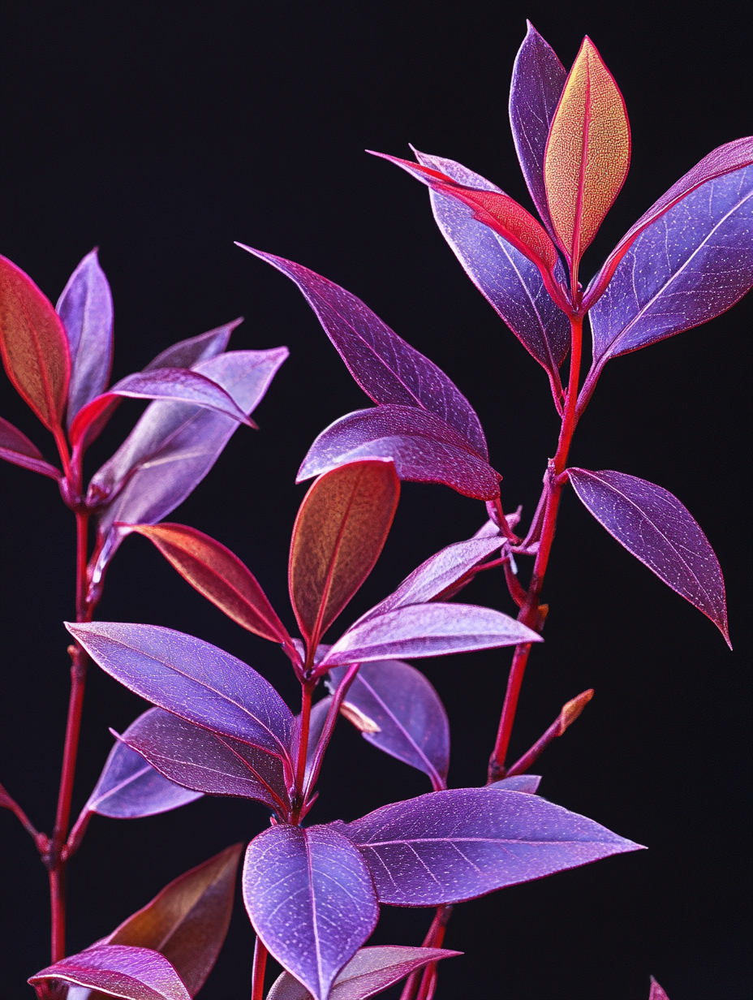
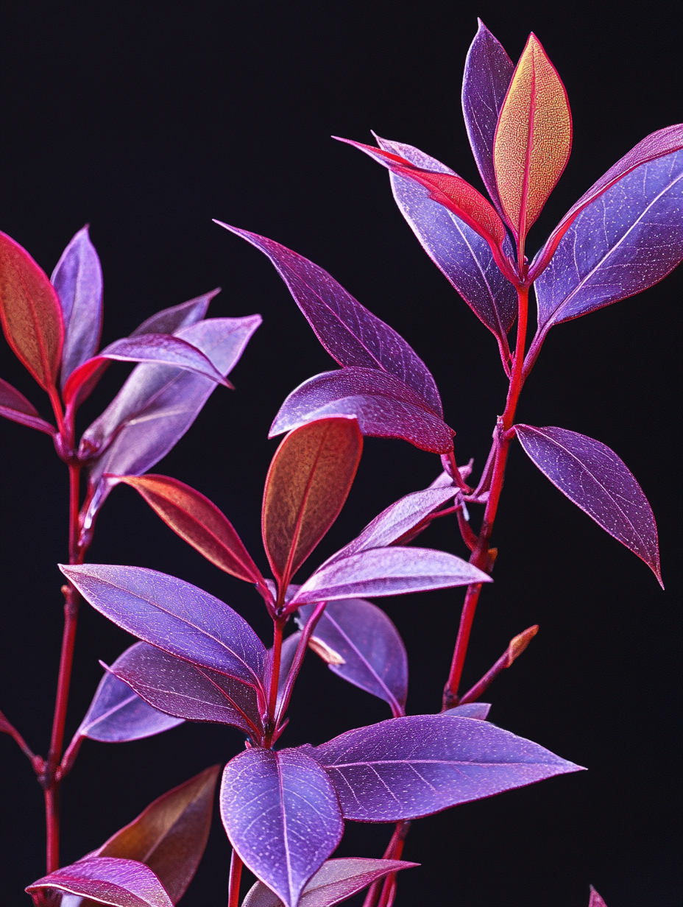

Plantae
└ Tracheophytes
Angiosperms
Magnoliids └ Laurales
└ Lauraceae
└ Terracotta
└ T. thunbergii
Angiosperms
Magnoliids └ Laurales
└ Lauraceae
└ Terracotta
└ T. thunbergii
Au 22è siècle, le Machilus thunbergii (houblon doré), adapté à la crise climatique et aux changements écologiques, a évolué en « Terracotta », développant des stratégies de survie remarquables. Pour survivre dans des environnements extrêmes comme l'élévation du niveau de la mer et la désertification, cet arbre a acquis des caractéristiques uniques, optimisant la restructuration des sols et les écosystèmes symbiotiques.
Le Terracotta sécrète des acides organiques par ses racines, transformant les sols sableux en argile, améliorant ainsi leur rétention d'eau de 300%. Il forme également une couche semblable à de la terre cuite grâce à des microstructures de silicate, empêchant l'érosion. Grâce à une symbiose avec des mycorhizes et des bactéries fixatrices d'azote, il absorbe les nutriments même dans des sols pauvres. Ses feuilles supérieures pratiquent la photosynthèse C3, tandis que les inférieures utilisent le métabolisme CAM, maximisant l'efficacité photosynthétique. Lorsque les températures dépassent 45°C, des spores situées à l'extrémité de ses branches libèrent une brume rafraîchissante, abaissant la température ambiante de 5 à 7°C. En saison sèche, ses feuilles s'enroulent en cylindre, réduisant leur surface de 60%, tandis qu'en saison des pluies, elles se déploient en collecteurs d'eau de 2 m². Un autre trait distinctif est sa capacité à excréter 92% du sel absorbé via des cristaux situés au revers des feuilles. Des anthocyanes absorbant les infrarouges et une couche de bêta-carotène bloquant les UV lui permettent de maintenir la photosynthèse sous divers climats. Il ajuste son cycle de croissance en fonction de l'eau disponible, pouvant survivre en dormance pendant 50 ans en cas de sécheresse. Écologiquement, il fixe 12 tonnes de sable par hectare et par an, luttant contre la désertification, et son taux élevé de transpiration atténue l'effet d'îlot de chaleur urbain.
Le Terracotta est un grand arbre à feuilles persistantes, atteignant 25-30 m de haut. Son tronc, de couleur vert-brun avec des motifs gris, et ses feuilles ovales-lancéolées et lisses présentent une teinte rappelant la terre cuite, favorisant la réflexion thermique et la rétention d'eau. Ses feuilles varient du pourpre foncé au rougeâtre, changeant de couleur selon les saisons :
Été : Pourpre profond
Automne : Rouge-brun
Hiver : Bronze terracotta
Ses fleurs vert-jaune, épanouies en mai-juin, et ses fruits noir-violet à éclat métallique, mûrs en juillet, ainsi que ses bourgeons d'hiver dodus, en font une espèce ornementale prisée.
Cette évolution démontre qu'une réponse aux catastrophes environnementales est possible grâce à des mécanismes purement biologiques, sans haute technologie. Un exemple ouvrant de nouveaux horizons en ingénierie écologique.
Le Terracotta sécrète des acides organiques par ses racines, transformant les sols sableux en argile, améliorant ainsi leur rétention d'eau de 300%. Il forme également une couche semblable à de la terre cuite grâce à des microstructures de silicate, empêchant l'érosion. Grâce à une symbiose avec des mycorhizes et des bactéries fixatrices d'azote, il absorbe les nutriments même dans des sols pauvres. Ses feuilles supérieures pratiquent la photosynthèse C3, tandis que les inférieures utilisent le métabolisme CAM, maximisant l'efficacité photosynthétique. Lorsque les températures dépassent 45°C, des spores situées à l'extrémité de ses branches libèrent une brume rafraîchissante, abaissant la température ambiante de 5 à 7°C. En saison sèche, ses feuilles s'enroulent en cylindre, réduisant leur surface de 60%, tandis qu'en saison des pluies, elles se déploient en collecteurs d'eau de 2 m². Un autre trait distinctif est sa capacité à excréter 92% du sel absorbé via des cristaux situés au revers des feuilles. Des anthocyanes absorbant les infrarouges et une couche de bêta-carotène bloquant les UV lui permettent de maintenir la photosynthèse sous divers climats. Il ajuste son cycle de croissance en fonction de l'eau disponible, pouvant survivre en dormance pendant 50 ans en cas de sécheresse. Écologiquement, il fixe 12 tonnes de sable par hectare et par an, luttant contre la désertification, et son taux élevé de transpiration atténue l'effet d'îlot de chaleur urbain.
Le Terracotta est un grand arbre à feuilles persistantes, atteignant 25-30 m de haut. Son tronc, de couleur vert-brun avec des motifs gris, et ses feuilles ovales-lancéolées et lisses présentent une teinte rappelant la terre cuite, favorisant la réflexion thermique et la rétention d'eau. Ses feuilles varient du pourpre foncé au rougeâtre, changeant de couleur selon les saisons :
Été : Pourpre profond
Automne : Rouge-brun
Hiver : Bronze terracotta
Ses fleurs vert-jaune, épanouies en mai-juin, et ses fruits noir-violet à éclat métallique, mûrs en juillet, ainsi que ses bourgeons d'hiver dodus, en font une espèce ornementale prisée.
Cette évolution démontre qu'une réponse aux catastrophes environnementales est possible grâce à des mécanismes purement biologiques, sans haute technologie. Un exemple ouvrant de nouveaux horizons en ingénierie écologique.

 
